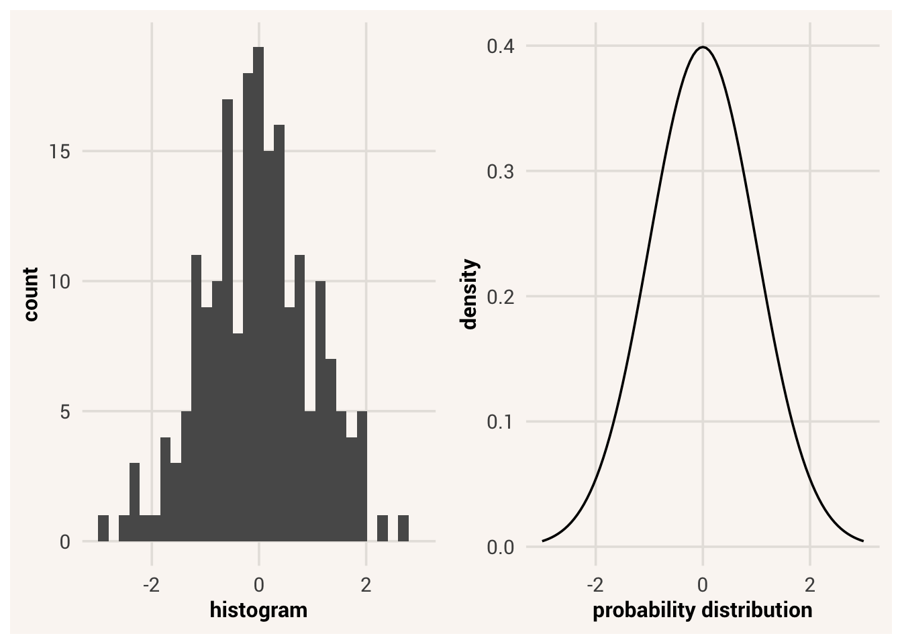
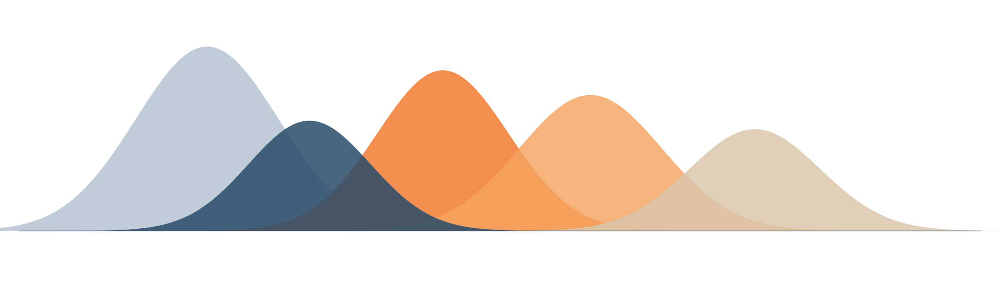
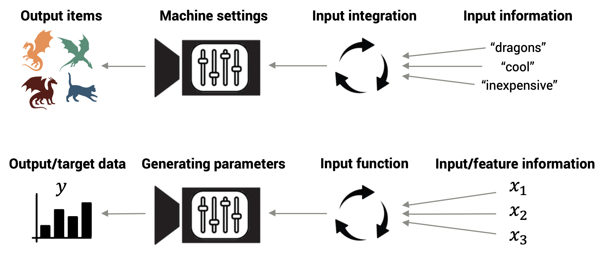
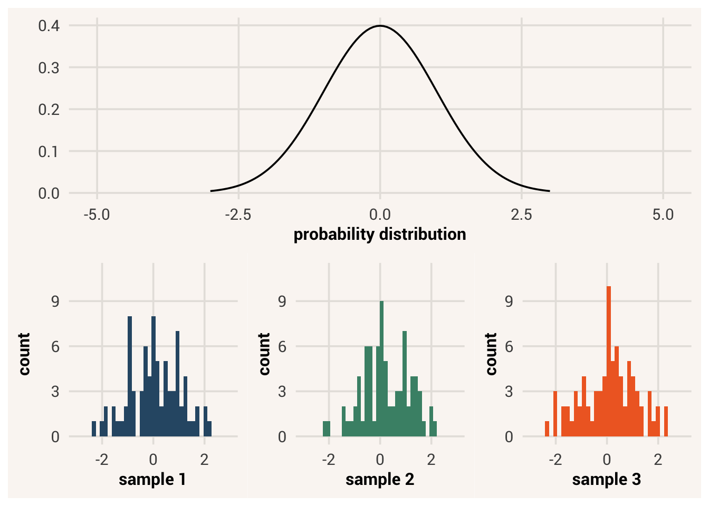
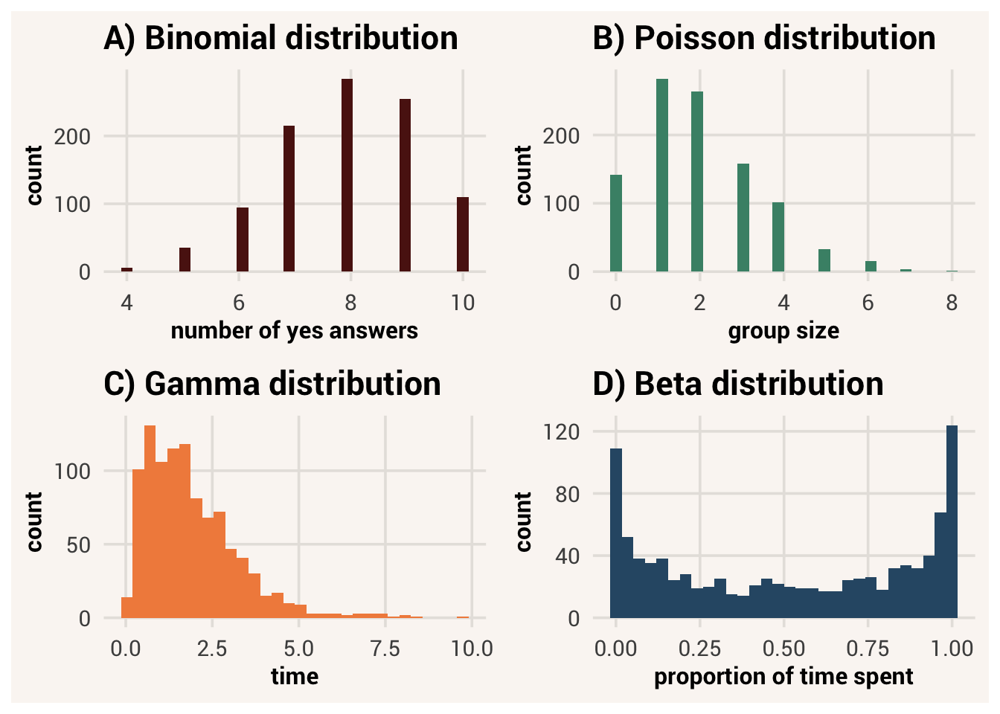
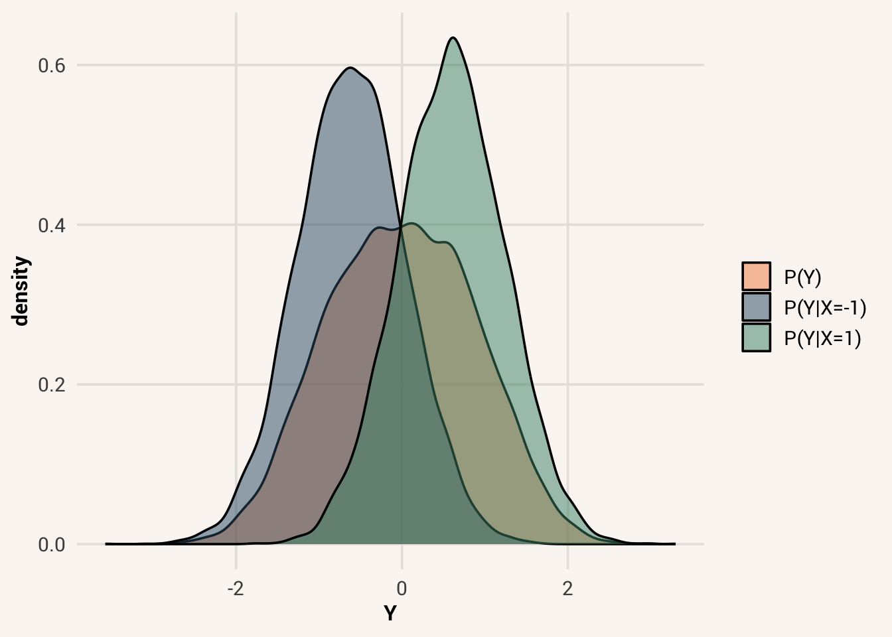
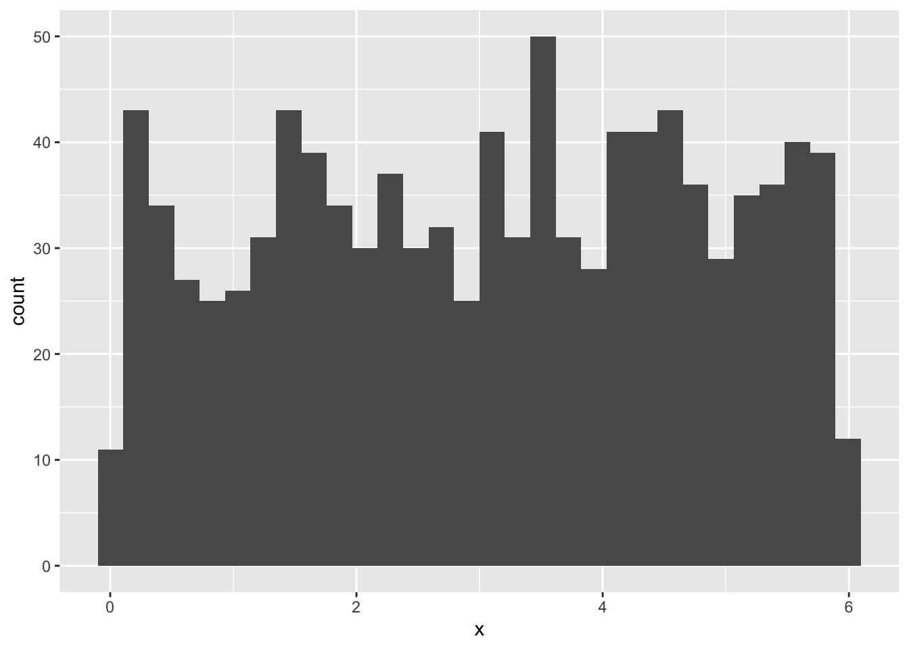
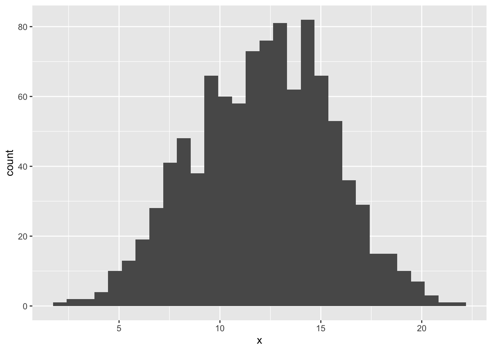

8 Where Data Come From

We can learn a lot by examining distributions and summaries of a dataset. We can describe the current state of some situation for a clearer picture about reality around us. But in data analysis, our interest usually goes beyond these data alone. Why is the sample distribution shaped the way it is? What causes certain values to be what they are? What will future data look like?
To be able to answer these sorts of questions, we need to understand and start thinking deeply about another fundamental idea in statistics - the data generation process.
data generation process = the process by which data take on the values that they do
8.1 The data generation process
So far we’ve described distributions of data, but have sort of acted like they just appeared in our hands - we didn’t discuss where they come from. We calculated associations between two variables and saw how much information about one variable reduces uncertainty about another, but didn’t talk very much about why those two variables would be associated in the first place, and why they are associated in the way they are.
Rather than looking at data as only a current record of reality, we can also think about data as the product of some sort of process. A delicious pizza doesn’t just poof into existence - you create it, by combining specific ingredients and subjecting them to specific procedures. The same is true of data. While we can see that a classroom of students are all different heights right now, their heights were created, by some combination of things like genetics, nutrition, stress, injury, etc. Thinking about this process of creation, not just the product, is thinking about the data generation process.
8.1.1 Components of the data generation process
Knowing the data generation for some variable is like knowing all the parts of a machine and how it works. When you put something into the machine, you know what the machine will do with that thing and you know what will come out. You can predict the outputs given the inputs. So if you know the data generation process of some variable of interest (from here on out we will call this a target variable1), that means you can answer three questions about it:
target variable = the variable we are trying to predict or understand
- What information goes into the process? What information can be used to generate the target data? What other variables influence what values are produced for the target variable?
- How does the input information get transformed and combined? How do we weight and transform the input information in order to create an output?
- What kind of data gets generated? What is the nature of the data that comes out? Are we always predicting the same target value given the same input information, or will it be a distribution of probable values?
These steps are abstract right now, so let’s think about this with a metaphor to start. Say that you own a pizza making machine that lets you dump in some ingredients and then makes a pizza for you. This is your pizza generation process.
Your machine can’t make pizzas out of nothing. There are some starting ingredients that are needed, like dough, sauce, and toppings. In addition, these toppings can be different things, and the specific pizza that comes out of the machine will depend on what ingredients you add at the beginning. In this way, the ingredients are the inputs that go into and influence your pizza generation process.
Once the ingredients are added to the machine, the way they are combined could be straightforward or complicated. For a different sort of machine like a soup maker, you could just input the ingredients and they all get added as they are in a big pot. For your pizza making machine though, the ingredients need to be processed - the dough will get rolled flat, the sauce will be spread, the toppings will be sprinkled at a certain ratio of sauce to toppings, and the whole thing will be baked. This process of combining, weighting, and transforming is the algorithm for how the input ingredients integrate to generate a pizza.
Finally, a pizza comes out of your machine. It could be a very high precision machine, so the same pizza will come out every time you put in the same ingredients. But it could also be a little random, so that sometimes adding the same amount of dough, sauce, and ingredients gets you pizzas with different crust thickness or topping distribution. However, you are never going to get an ice cream sundae out of this machine. This is the distribution of the kind of outputs you can expect from your pizza making process.
Now think of that same process, but for a target variable like people’s heights. Other variables like genetics and environment can influence how tall a person is, so we would call these the input information or explanatory variables 2.
explanatory variables = variables that influence the data generation process of a target variable
If there are multiple explanatory variables, we need some way of combining that information. We could simply add up the values, multiply them, average them, etc. Whatever mathematical process we do to combine the explanatory variables, we call that the prediction equation.
prediction equation = the mathematical algorithm that combines explanatory variables to determine the output of a data generation process
Finally, we get some data out of the process. Importantly, it’s not just any type of data. Height can only be a real positive number, so we will never get a value like -12. Also, even if two siblings have the same genes and grew up in the same household, they might end up with different height values. So we don’t expect the data generation process to only ever give us one value, but a distribution of values with higher and lower probability.
8.2 Simulating data
Let’s practice these ideas by defining a data generation process of our own and generating data with it. Doing this is called simulating data. Simulation may sound complicated based on popular ideas of super computers and simulated realities. But simulation just means generating data based on provided information about the data generation process - running the data generation process yourself. To start we will play with a very simple data generation process, the distance traveled by a dropped ball.
simulation = the process of generating data based on provided information about a data generation process
If you took a physics class in school, you might recall calculating the falling distance of an object from the gravitational force exerted on that object and amount of time spent falling3. If we want to generate data for distance as a target variable, the explanatory variables that matter are gravitational force and time.
When calculating how those variables combine to create a distance score, there is a specific equation:
\[ d = \frac{1}{2} * g * t^2 \]
Here \(g\) is gravitational force, \(t\) is time since the object was dropped, and \(d\) is the resulting distance. This is the input function that controls how the explanatory variables are combined. To generate distance data, we simply need to pass values of the explanatory variables into this equation. The result will be values of our target variable, distance.
If we wanted to generate a lot more data without a bunch of typing, a handy function rep() in R lets us make a new vector by repeating values of an existing vector. If we write rep(x, times = n), the whole vector x will be repeated n times. If we write rep(x, each = n), each individual element of the vector x will be repeated n times before moving on to the next element. Try it in the code block below to generate distance values for different inputs of time and gravity, as if we were repeating this experiment on different planets.
TipExercise
Use rep() to make bigger data vectors for t_long and g_long. t_long should be t repeated 30 times, while g_long should be each value of g repeated 30 times.
We’ve covered the input information for this data generation process and how it is combined to produce an output. For the last component of the data generation process, we describe the kind of data that the generation process produces. We get an exact, positive value for distance4.
8.3 Deterministic vs. probabilistic data generation
We can plot our data to see the outcome values we generated:
TipExercise
Use ggplot() code from a previous chapter to visualize the distribution of distance values. Reread Section 5.2 if you need a refresher.
TipReveal the answer
ggplot(grav_data, aes(x=d)) + geom_histogram()
Let’s also visualize all the data together - we’ll make a scatter plot of distance, gravity, and time in one plot. So far we’ve only made plots for two variables at a time, but we can easily expand to three by using our ggplot2 knowledge to put two variables on each axis and coloring different dots by the third variable.
Now we can also see the distribution of d within each value of g and t.
But wait, it looks like there’s only one data point at each combination of g and t. We repeated the g and t vectors 30 times, so shouldn’t there should be 30 * 5 data points on the plot? This isn’t wrong; look at a jittered version of the plot:
The reason we couldn’t see all the data in the first scatter plot was because the data points at the same values of g and t were overlapping. This happened because we said exact values will be produced by the data generation process. When multiple data points have the same value of g and t, they will also have the same value of d. In other words, g and t entirely account for the variation in d; the distribution of d values for specific values of g and t isn’t really a distribution at all:
When a data generation process produces exactly the same target values for the same inputs, we are dealing with what is called a deterministic data generation process. The input function entirely determines the target values. This is like if our pizza making machine always produced the exact same pizza whenever we gave it the same ingredients.
deterministic data generation = when everything is known about how a target value is generated, such that the values can be calculated exactly
In contrast, let’s look at data from humans in the studentdata dataset. We will plot Hand and Sex as explanatory variables of the target variable Height.
TipExercise
Make a scatter plot with Height on the y-axis, Hand on the x-axis, and color the points by Sex.
TipReveal the answer
ggplot(studentdata, aes(x=Hand, y=Height, color=Sex)) + geom_point()
Hand and Sex are related to Height, because they change the distribution of Height at each unique value of those input variables. However, there is still some distribution. Some variation in Height is left unaccounted for.
This is what’s known as a probabilistic data generation process. In this sort of process, the kind of data the process generates is not an exact data value, but a distribution of possible values. The target data we record is a random value from these possibilities. If this were our pizza machine, we’d sometimes get deep dish vs. thin crust pizzas even if we put in the same ingredients.
probabilistic data generation = when not everything is known about how a target value is generated, so there is still uncertainty in what target values will occur

In a probabilistic data generation process, we don’t know why observations with the same explanatory values end up with different target values. It could be that our understanding of the data generation process is incomplete. In the pizza machine example, maybe there’s some extra “crust thickness” setting we don’t know about. For height data, it’s possible that we could eventually learn more about what determines someone’s height, such that we could perfectly predict how tall someone would grow up to be if we added all that information into the prediction equation.
It could also be because there is some inherent randomness in the data generation process that can’t be resolved. When studying humans, we often focus on target variables like thoughts and feelings, which we can never measure directly - we call these latent variables. We have to rely on indirect measures like self-reports, behaviors, and/or physiological measurements. These are probably not exact signals of the measurement target, so even if a data generation process is deterministic for the latent variable, it will look probabilistic for the measured variable.
But at the moment we don’t know that additional information. So it is often more productive to think about the data generation process as producing a distribution of possible values, instead of trying to optimize for predicting one value. We can then describe and have hypotheses about features of that distribution - it’s center, spread, shape, etc. - as an interesting consequence of the data generation process.
Even though probabilistic data generation processes don’t let us predict outcome values exactly, it is still useful to study them. For one, almost everything that science studies is some kind of probabilistic process. There are very few phenomena that we understand so completely, or can measure so perfectly, that we can predict what will happen exactly. In addition, a probabilistic data generation process still tells us what target values are more likely to happen than others, so they help us make decisions. Probabilistic data generation processes can also be simpler to use, because we don’t have to include so much explanatory information that we may or may not have.
So don’t think of a probabilistic data generation process as a worse version of a deterministic process; rather, think of it as generating a different kind of thing - distributions rather than exact data values. In fact these distributions of possible values that are created by a probabilistic generation process have a special name: probability distributions.
probability distribution = how probable each possible value of a variable is likely to be when an instance of that variable is realized
8.4 Probability distributions
Because probabilistic data generation processes are so ubiquitous, and the kind of data they create are probability distributions, let’s discuss more what probability distribution are and how they work.
8.4.1 Rules of probability
A probability distribution describes the probabilities of all possible values that could occur for a target variable. We can visualize it using what is known as a density plot. A density plot is much like a histogram, but it puts probability (“density” of probability at each value \(x\)) on the y-axis instead of counts. Where a density plot is denser, that value is more likely to occur.
density plot = a type of plot that shows the proportion of a distribution that has a specific value
In Chapter 6 we started talking about probabilities as our expectations about randomly drawing a value from a distribution like we draw a marble from a bag. This random drawing is called sampling. If 9/10ths of the marbles in a bag are blue and only 1/10th are red, when we randomly sample a marble from the bag we expect it to be blue and we are pretty confident about that. Likewise, if a data probability distribution says some target values is more likely to happen than others (that part of the density plot is higher), we expect those values to show up in our recorded data more often when the same input values are used. The densest parts of the probability distribution are the most likely values.
sampling = the process of generating one or more elementary events from the sample space
What is probable, however, does not guarantee what will actually happen. It is still possible to draw a red marble even when there’s a 90% chance of drawing blue. In fact, it is possible to draw multiple red marbles in a row, even though we’d be really surprised to see that. In a data probability distribution, it is possible that we end up with target data values that are surprising, and possibly at a higher rate than expected. For this reason, the distribution of data that we collect might not look the same as the probability distribution. The probability distribution is what we expect, but that exact shape may not be what we get.

To talk more formally about probability, it is defined as the proportion of times a certain value will occur in a very, very large sample - an infinitely large one. We will notate this infinitely large variable as capital \(Y\), while the finite set of data values in a dataset is \(y\). The distribution of values in \(y\) is not guaranteed to be the same as in \(Y\).
To notate the probability of sampling a specific value within \(Y\), we use the letter \(P\). For instance, the probability of randomly getting a red marble out of a bag is:
\[P(Y = red) \tag{8.1}\]
If the probabilities in the bag were 90% blue / 10% red, then \(P(Y = red) = 0.1\) as red would only appear 10% of the time in an infinitely large sample of random bag draws. But a finite sample of 100 marble draws might have 15 red marbles, or 8, or even 0. The proportion of values in a data sample is likely to be close to the underlying probability, but it won’t be exactly the same due to randomness.
8.4.2 Kinds of probability distributions
There are different kinds of probability distributions that apply to different kinds of variables. These different kinds fall into what are called distribution families.
distribution family = a group of distributions that have the same parameters; different members of the family will have different values of those parameters
For example, if you flipped a coin over and over and recorded each face as data, there could only be two possible values - heads and tails. Something like “purple” or “23.3” can never happen in these data. This set of possible values, called the sample space, would be written as \(\{heads, tails\}\). A variable with only two possible values is fairly common in nature, so mathematicians have given it a name. This is called a Bernoulli variable, after the mathematician who formally defined it. A Bernoulli variable is one that has a Bernoulli distribution - two possible values, occurring some proportion of the time. Other examples of Bernoulli-distributed variables include disease diagnosis (have it or not), question answers (correct or not), survival (dead or alive), etc.
sample space = the set of all possible values a variable can takeBernoulli distribution = a kind of distribution made by a binary variable with two possible outcomes; defined by the probability of those outcomes
But Bernoulli distributions don’t have to look exactly the same. Some have a really low probability for the first option, some a high probability for it, some have middling probabilities for both options. In Chapter 5 we learned to describe a binary variable with the proportion of the distribution that has a value of 1 (whatever category was given a ‘1’ label); different-looking binary distributions have different proportions. The proportion of 1’s also describes how the probability distribution of a Bernoulli variable looks, like a setting dial we can turn. We call this the parameter of the distribution.
parameter = a summary characteristic of a probability distribution that controls how the distribution is shaped
Note
To keep the ideas of probability distributions and data distributions separate (potential values vs. values that are actually recorded), we refer to their summaries with different words. A summary metric that describes the center and spread of a probability distribution is a parameter; the same metric describing a data distribution is a statistic.
The probability distribution for a variable more like height, however, works differently. In this variable, any decimal value in a continuous range is possible. For this reason such a variable would belong to a different probability distribution family, like uniform distributions. In a uniform distribution, it makes less sense to describe it with a proportion for a specific value because there are infinitely many specific decimal values. For this reason, distributions in the uniform family take different parameters, like a different kind of machine has different kinds of settings. The parameters for any uniform distribution are instead the minimum and maximum values.
uniform distribution: a kind of distribution where all values are continuous and equally likely; defined by the minimum and maximum value
Or perhaps you know that a target variable has some values that are more likely than others, with a clear mode. This is again another kind of probability distribution, the shape of which is described by different parameters. One of the most common families of unimodal distributions is the normal distribution family. This distribution is not controlled by a min and max - in fact, a normal distribution technically has a sample space from negative infinity to positive infinity, although extreme values are vanishingly rare. Instead the shape of this family is determined by the distribution’s mean and standard deviation. A normal distribution can be wide or narrow, centered on high or low values, but they are all unimodal and symmetric.
normal distribution: a kind of distribution where all values are continuous and symmetrically unimodal; defined by the mean and standard deviation
Note that when choosing a distribution family for the probability distribution of a target variable, the distribution family is not dictated by the the target data type. A variable like height can be recorded in inches, or as the answer to a Boolean question “tall enough to ride this roller coaster?” But the fundamental nature of the variable - its scale of measurement - is interval with values that are more or less probable and symmetric. When choosing a distribution family to generate data such as heights, let the scale of measurement guide you and if necessary, transform the data into different values afterwards.
There are many other distribution families out there for different kinds of variables. We won’t cover them in this book, but Figure 8.5 shows some examples you might run into in the future.

8.4.3 Probability axioms
There are three axioms of probability which describe how all probability distributions work. Regardless of the kind or shape of a probability distribution, the following three rules are always true:
- The probability of any value must be non-negative
\[P(Y = y_i) \geq 0 \tag{8.2}\]
- The total probability of all possible values in the distribution is 1
\[\sum_{i=1}^{n} P(Y = y_i) = 1 \tag{8.3}\]
- The probability of any value cannot be greater than 1
\[P(Y = y_i) \leq 1 \tag{8.4}\]
The plain-text meaning of these axioms is that any value in a probability is either impossible to happen (0% chance), guaranteed to happen (100% chance), or something in between. There’s no such thing as a probability above 1 or a negative probability. In addition, if we take the probability of each possible value of \(Y\) in a probability distribution and add them up, they must sum to 1. Something is always guaranteed to happen.
From these three rules, we can build up other facts about probability distributions. For instance, the probability that some \(Y\) score will not equal a certain value is 1 minus the probability that it will: \[P(Y \neq y_i) = 1 - P(Y = y_i) \tag{8.5}\]
This is the subtraction rule for probability.
The cumulative probability of a value \(Y = y_i\) uses \(y_i\) as a cutoff and treats all values at or below that cutoff as the same outcome. To find the cumulative probability of \(y_i\), you sum the probabilities of all values less than or equal to \(y_i\)5:
cumulative probability = the probability of an observation having a value less than or equal to a cutoff value
\[\sum P(Y \leq y_i) = P(Y = y_1) + P(Y = y_2) + ... + P(Y = y_i) \tag{8.6}\]
An example of a cumulative probability is finding the chance that someone has a sub-clinical depression score. This would be the sum of probabilities of all depression score options that are below a clinical threshold.
8.5 Simulating probabilistic data
A probabilistic data generation process generates a probability distribution, not exactly the same data values every time. The target variable values we happen to record in a dataset are randomly sampled. We can simulate this random sampling process to produce data values from a probability distribution we specify.
8.5.1 Simulating Bernoulli data
Let’s see a simple probabilistic data generation process as an example. Consider an everyday coin that has two sides, heads and tails. When we flip the coin one of the two sides will be showing. We want to predict what side will face up on a given flip of the coin; this means the coin face showing is our target variable and flipping the coin is the data generation process.
When you flip the coin once, can you predict what side will be showing when it lands? Unless you’re a wizard6, your answer is probably no. You can only say that it will be one of two values, heads or tails, a certain proportion of the time. That means the coin flip is a probabilistic process that produces a probability distribution of possible outcomes.
A probability distribution tells us what values are possible and probable for a target variable, but it doesn’t give us any actual target data yet. For that, we have to randomly sample from the probability distribution. We can use the rbinom() function for this. It is short for “random binomial distribution” and it randomly samples values from a distribution that you specify. To do so, there are three arguments:
n: how many data points to sample from the probability distribution.size: how many “trials” per observation. In our case, this is how many flips we do before writing down the data (just 1 flip).
prob: probability of getting a “success” in each “trial”. A “success” for us can be getting heads vs. tails, so this is the probability of getting heads.
With this information, rbinom() will randomly choose values from the probability distribution specified. Here is some code that generates 1 coin flip from a fair coin probability distribution:
When you ran the code above, what value did you get? Remember that we can never perfectly predict what value in a probabilistic process will come next - we only know the probability across many samplings. Thus, you likely got a different value than someone else did. In fact, if you execute the above code multiple times, you will get different results even though you didn’t change any code. Try it!
Note
Note, if you ever want to make a random process in R spit out the same value every time you run it, include the function set.seed() on the line before. Put any number you want as the argument to this function. Each different number will operate as a separate “seed” from which your outcome now deterministically “grows.” Every sample generated from the same seed will produce the same sample. This is useful if you want to check your work or someone else needs to reproduce it.
TipExercise
Try changing the arguments in the rbinom() function to simulate 10 coin flips.
8.5.2 Simulating uniform data
If we wanted to generate uniform data instead of Bernoulli, we can use the function runif(). This is short for “random uniform distribution”. This function takes three arguments:
n: how many values to generatemin: the minimum value of the probability distributionmax: the maximum value of the probability distribution
TipExercise
Finish the code below to generate 100 uniformly distributed values between 0 and 10.
8.5.3 Simulating normal data
As you might expect, simulating data from a normal probability distribution also has its own function: rnorm(). Again, there are arguments for the parameters of this specific distribution family (mean and standard deviation) as well as an argument for how many data values to generate:
n: how many values to generatemean: the mean of the probability distributionsd: the standard deviation of the probability distribution
TipExercise
Write code that will generate 200 normally distributed values with a mean of 5 and a standard deviation of 2.
8.6 Conditional probability
It is possible to say that a data generation process has no inputs, and only produces a set probability distribution all of the time. This would be the case if we know no other information that might influence a target variable, so all we can do to describe how the target values come about is through some probabilty \(P(Y)\).
However, because we are usually interested in how explanatory variables influence a target variable, we assume that \(P(Y)\) is going to change as a function of whatever the explanatory variable’s value is. This is how we first talked about associations in Chapter 6: knowing the value of \(X\) changes our predictions about what \(Y\) will be. If our predictions about \(Y\) are based on the probability distribution that \(Y\) values could take, this means there should be a different \(P(Y)\) distribution for each separate value of \(X\). In other words, the probability of \(Y\) is conditional on the value of \(X\).This is called the conditional probability, written as:
conditional probability = the probability of a target variable given the value of an explanatory variable
\[P(Y|X)\]
You would pronounce this as “the probability of \(Y\), given \(X\)”.
\(P(Y|X)\) is not the same as the overall \(P(Y)\), also called the marginal probability of \(Y\). Consider our red and blue marbles example again, but this time there are red and blue dice in the bag as well. Now we have two variables: object color and object shape. The probabilities that a random object you pick out of the bag is both a certain color and shape break down as:
marginal probability = the probability of a target variable without considering any explanatory variables
| Red | Blue | |
|---|---|---|
| Marble | 0.1 | 0.5 |
| Dice | 0.2 | 0.2 |
Each of these values is the probability of picking an object of a certain color and shape - a combination of specific values for the two variables. This is known as the joint probability and is written as:
joint probability = the probability of a target variable value and an explanatory variable value occurring together
\[P(X,Y) \tag{8.7}\]
E.g., we would say the joint probability of picking a blue marble is \(P(X=marble, Y=blue) = 0.5\).
If we didn’t care what shape an object was and just wanted to know the probability that whatever we pick out of the bag will be red, we find the cumulative probability of all the red objects; \(P(Y = red) = 0.05 + 0.25 = 0.3\). This is called the marginal probability because it’s like summing up the whole red column in this table and writing that sum in the margin of the page:
| Red | Blue | P(X) | |
|---|---|---|---|
| Marble | 0.1 | 0.5 | \(P(X=marble) = 0.6\) |
| Dice | 0.2 | 0.2 | \(P(X=dice) = 0.4\) |
| P(Y) | \(P(Y=red) = 0.3\) | \(P(Y=blue) = 0.7\) |
But what if, when we reached into the bag and grabbed something, we could feel that we had a marble before seeing it? Now, we have information about the shape variable. If we want to know the probability that the object we will draw is red, but we already know it’s one of the marbles, we can ignore all possibilities of non-marble objects being our selection. We are now only considering the probabilities on the first row - the probability of picking something red given it is a marble: \(P(Y = red | X = marble)\). To calculate this, we take the joint probably of picking a red marble and divide it by the marginal probability of picking any marble - i.e. finding what proportion of the marble options are red. Written out mathematically,
\[P(Y | X) = \frac{P(X,Y)}{P(X)} \tag{8.8}\]
In our case, \(P(Y = red | X = marble) = 0.1 / 0.6 = 0.1667\).
Alternatively, if we had grabbed something that felt square, we would only consider the second row of the table as now all the marble values are no longer possible. The probability that the dice we grabbed is red is \(P(Y = red | X = dice) = 0.2 / 0.4 = 0.5\).
Interesting! If we didn’t know what shape we were going to draw, our probability of drawing something red was 0.3. If we knew it was a marble, that probability dropped to 0.1667. But if we knew it was a die, that probability increased to 0.5. Thus, the marginal probability is not the same as the conditional probability. Additionally, the probability \(P(Y|X)\) is different depending on what \(X\)’s value is.
Notably, the conditional probability of \(Y\) given \(X\) is also not the same as the conditional probability of \(X\) given \(Y\). For instance, if we know that we picked a marble, the probability that it is red is \(P(Y = red | X = marble) = 0.1 / 0.6 = 0.1667\). But if we know that we picked a red object, the probability that it is a marble is \(P(X = marble | Y = red) = 0.1 / 0.3 = 0.3333\). For a more intuitive example, what is the probability that someone is really tall, given they play professional basketball? Probably pretty high - the average height in the NBA was 6’7” in 2025-2026. Now what is the probability that someone plays professional basketball, given that they are really tall? Very few people can become professional athletes, even if they are tall!
Zooming back out to the idea of a data generation process, if we don’t know anything about why a target observation has the value that it has, we can only describe it as coming from a marginal probability distribution \(P(Y)\). But if there are explanatory variables \(X\) that go into the data generation process and influence the likely values of \(Y\), then there are conditional probability distributions \(P(Y|X)\) that are different than the marginal distribution, and different from each other. Knowing \(X\) lets us know which conditional probability distribution to use.

8.7 Simulating conditional probabilistic data
Let’s practice specifying a full data generation process and simulating data probabilistically, with different probability distributions for the target variable depending on the value of the explanatory variable. To do so, we still define what explanatory variables to care about and what the prediction equation is to combine them. But then, the thing that the prediction equation generates is not a value for a target data point, but a distribution of possible target values given the input value (i.e., a conditional probability distribution).
Back to the Bernoulli example with coin flipping. What sort of things influence the proportion of times a coin will come up heads? A random coin you find on the street is probably fair, in that heads and tails will come up about the same number of times over repeated flips. But an unfair coin that is weighted on the tails face will land heads up more often than tails up. So let’s create some explanatory data about whether or not a coin has a weight, and then write a prediction equation that increases the chance of heads when the coin is weighted.
This data generation process we have defined specifies the probability distribution of what values are possible and probable for a coin flip to have. By defining heads_prob <- 0.5 + 0.2*coin_weighted, we are saying that an unweighted coin (coin_weighted == 0, cancelling out of the equation) will have a heads probability of 0.5 and a weighted coin (coin_weighted == 1) will have a probability of 0.5 + 0.2*1 = 0.7.
Now we can use rbinom() again to simulate coin flips, but this time for each row of the dataset the prob argument will change depending on the value of heads_prob for that row. We will loop through each row of the dataset and record a coin flip based on this process. Make sure you read carefully what each line of code is doing!
To review this data generation process:
- we specified the explanatory variable,
coin_weighted - we specified the prediction equation,
heads_prob= 0.5 + 0.2*coin_weighted - we specified that this is a probabilistic data generation process, so the result of the data generation process is a probability rather than an exact value every time. Target data are then randomly sampled from this probability distribution.
To be specific, the output of the prediction equation is a parameter of the probability distribution, since an equation like this only spits out one number. We then use this parameter to describe the kind of probability distribution that will generate the target data.
For instance, we can change our idea of the data generation process to generate a uniform probability distribution of values instead of Bernoulli. In that case, the prediction equation determines one or more of the parameters of the uniform distribution - the min/max.
TipExercise
Finish the code in line 16 below to generate data from a uniform probability distribution where the min and max parameters are a function of condition.
TipReveal the answer
uniform_data$target[i] <- runif(n=1, min=min_i, max=max_i)
It is very common to define a data generation process that creates data that is normally distributed, conditional on some explanatory variable. In this common approach, the prediction equation determines the most likely value of the target variable (the mean of a \(P(Y|X)\) distribution), and real data values are randomly and equally distributed around that likely value.
By controlling these three pieces of the data generation process - the input variables, the way those variables are combined, and the type of output created - we can generate many possibilities of data.
TipOptional: going deeper
Even when we’re talking about probabilistic data generation and we don’t know everything that determines why a data point has a certain value, the type of distribution we choose implies something about how that data value was created, not just the shape of the distribution that tends to occur for this variable.
For instance, consider a uniformly-distributed target variable with a min of 0 and max of 6. This could be something like rolls on a 6 sided die. If we plotted this, we’d see roughly equal numbers of values on the range 0 to 6.
x <- runif(n=1000, min=0, max=6)
ggplot(data.frame(x), aes(x=x)) +
geom_histogram()
Now say this isn’t actually our target variable, but the sum of several dice rolls is. When we roll 4 separate dice, sometimes we will roll a high number and sometimes a low number. Each roll by itself has an equal probability of happening, but the probability that all the dice roll high is lower than the chance that some roll high and some roll low. This is because there is only one way to get the highest score: 6 + 6 + 6 + 6 = 24. But there are multiple ways to get a score like 14: 6 + 6 + 1 + 1 = 14, 5 + 5 + 2 + 2 = 14, etc. So when we sum the results of multiple separate rolls, our total score distribution looks like:
x1 <- runif(n=1000, min=0, max=6)
x2 <- runif(n=1000, min=0, max=6)
x3 <- runif(n=1000, min=0, max=6)
x4 <- runif(n=1000, min=0, max=6)
x <- x1 + x2 + x3 + x4
ggplot(data.frame(x), aes(x=x)) +
geom_histogram()
That looks a bit like a normal distribution, doesn’t it?
Indeed, normally-distributed data in nature come about through combinations of many factors. And if there are many factors, it doesn’t matter what the underlying distribution of those factors are - the sum of their values will approach a normal distribution shape. This is a useful mathematical idea known as the Central Limit Theorem that lets us assume the normal distribution is the approximate conditional distribution for a lot of target variables, even if we don’t know all the factors that influence them.
8.8 The data generation process in research
All the simulation of fake data we’ve done so far may not feel very useful right now. How does this connect to looking at patterns in a real dataset? As we progress in later chapters, it should become clear that defining a data generation process is deeply central to successfully using statistics to answer research questions.
For researchers interested in description research goals, the estimand of interest is often some summary of what values are possible and probable in a population. Since these summaries can be thought of as parameters of a probability distribution, we can say that description research goals focus on what type of data generation process is responsible for a target variable. This is often very important information to have before you’re able to pursue other research questions.
For researchers interested in explanation, the form and components of the data generation process are the phenomena of interest more than any specific data value that comes out of it. The how, not just the what. While statistics alone can’t determine cause and effect, looking at data for evidence of the data generation process can give us important clues about the mechanisms of the human mind and society. In fact, what we normally think of as scientific research questions - e.g. “what aspects make a message more persuasive?” or “do children learn new languages better than adults?” - are really questions about the data generation process: How is persuasion generated from message design? How does age contribute to the process of language acquisition? Different scientific theories are ideas about the pieces and form of a data generation process.
For researchers with prediction goals, the data generation process may not seem as immediately relevant if we are thinking about it as the causal process that creates data. In a prediction problem, we could use causal outcomes as indicators (e.g., health symptoms) to predict the cause as the target (e.g., disease). But the concept of the data generation process is still relevant for prediction goals if we think about what information causes our guesses about what the value of the target is.
This is why thinking about the data generation process is so important, and why we will get much more practice with it as we go on.
8.9 Chapter summary
8.9.1 Learning goals
After reading this chapter, you should be able to:
- Explain what the data generation process is and why we would care about it
- Describe the different components of the data generation process
- Explain the difference between deterministic vs. probabilistic data generation
- Explain the difference between a probability distribution and a data distribution
- Compare and contrast Bernoulli, uniform, and normal probability distributions
- Recite the three axioms of probability
- Define and notate marginal, cumulative, conditional, and joint probability
- Use
rbinom(),runif(), andrnorm()to probabilistically simulate data, with and without influences from explanatory variables
8.9.2 New concepts
- data generation process: the process by which data take on the values that they do.
- target variable: the variable we are trying to predict or understand.
- explanatory variables: variables that influence the data generation process of a target variable.
- prediction equation: the mathematical algorithm that combines explanatory variables to determine the output of a data generation process.
- simulation: the process of generating data based on provided information about the data generation process.
- deterministic data generation: when everything is known about how a target value is generated, such that the values can be calculated exactly.
- probabilistic data generation: when not everything is known about how a target value is generated, so there is still uncertainty in what target values will occur.
- probability distribution: how probable each possible value of a variable is likely to be when an instance of that variable is realized.
- density plot: a type of plot that shows the proportion of a distribution that has a specific value.
- sampling: the process of generating one or more elementary events from the sample space.
- distribution family: a group of distributions that have the same parameters; different members of the family will have different values of those parameters.
- Bernoulli distribution: a kind of distribution made by a binary variable with two possible outcomes; defined by the probability of those outcomes.
- parameter: a summary characteristic of a probability distribution that controls how the distribution is shaped.
- uniform distribution: a kind of distribution where all values are continuous and equally likely; defined by the minimum and maximum value.
- normal distribution: a kind of distribution where all values are continuous and symmetrically unimodal; defined by the mean and standard deviation.
- cumulative probability: the probability of an observation having a value less than or equal to a cutoff value.
- conditional probability: the probability of a target variable given the value of an explanatory variable.
- marginal probability: the probability of a target variable without considering any explanatory variables.
- joint probability: the probability of a target variable value and an explanatory variable value occurring together.
8.9.3 New R functionality
other names include dependent variable, outcome variable, response variable↩︎
other names include independent variables, predictor variables, features↩︎
Actually even this situation isn’t so simple if we think about air resistance too, but let’s assume a vacuum for now like all those intro physics problems tend to.↩︎
Technically our equation could make negative numbers if we passed a negative number for gravity, but that would break the known laws of physics so we can safely assume that won’t happen.↩︎
area under the probability curve up to that point, if you’re familiar with calculus.↩︎
If that’s you, I know a few casinos we can hit↩︎